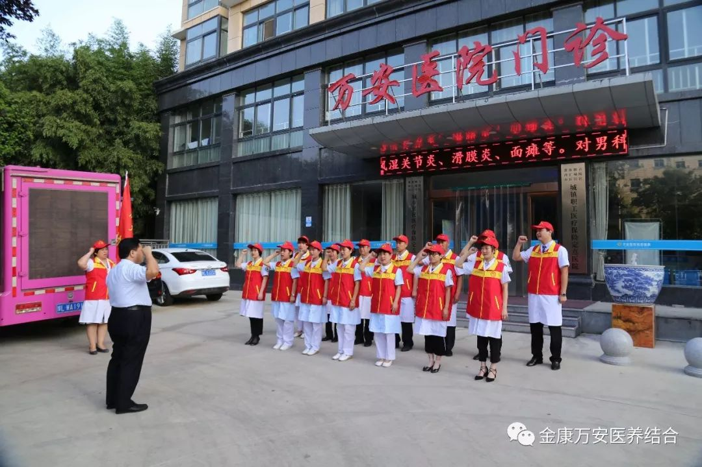
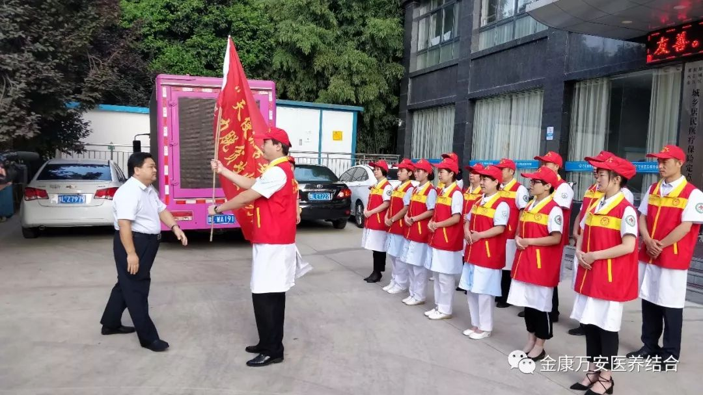
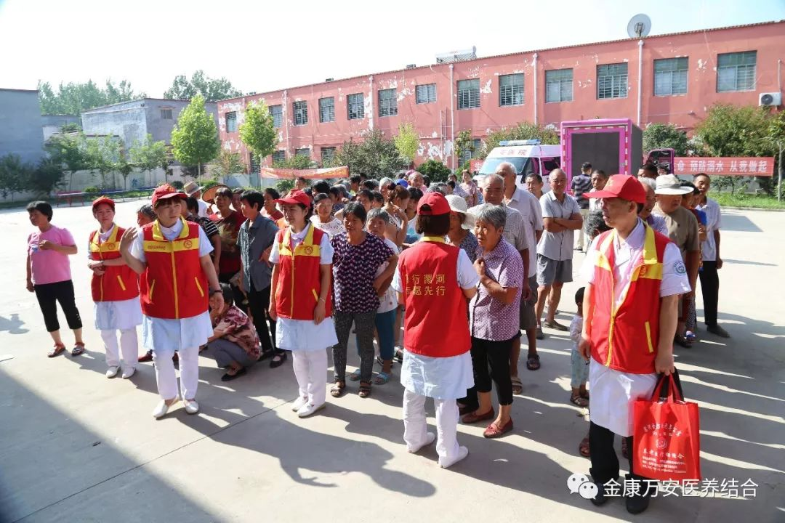
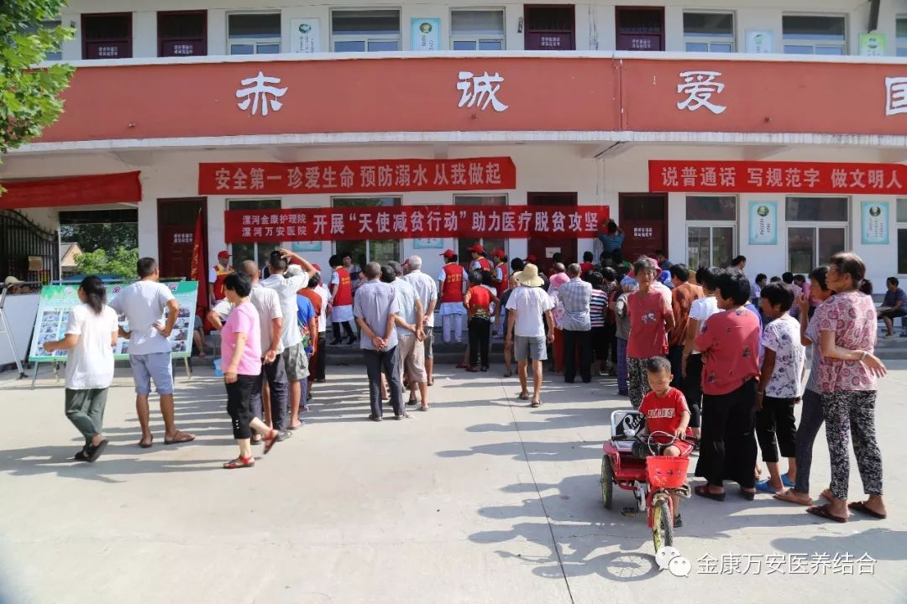

万安医院新闻
漯河金康护理院、漯河万安医院到老窝镇开展健康扶贫义诊活动
人气: "" 时间：2018-07-07
漯河万安医院
开展“天使减贫行动”
助力医疗脱贫攻坚
对口支援老窝镇古同村
大型义诊活动
为深入贯彻省、市脱贫攻坚推进会议精神，形成强大脱贫攻坚合力，打赢脱贫攻坚战， 进一步提升医疗服务行动，落实区委关于健康扶贫工作的指示精神，积极做好健康扶贫工作，更好地解决贫困村民看病难、看病贵、看病远等实际问题，帮助所需人员尽快脱离因病致贫、因病返贫的困境，漯河金康护理院、漯河万安医院于7月7日开展对口帮扶老窝镇古同村，对其进行助力医疗脱贫大型义诊活动。
活动内容
对于此次帮扶行动，我院领导高度重视，选派我院精兵强将，成立了一支由内科、外科、妇科、康复科、医学检验科等科室，共27名医护人员组成的专家团队，在院长王卫峰、业务院长张莉的带领下，来到召陵区老窝镇古同村开展大型义诊活动。
 早上七点，健康扶贫工作队伍准时出发，经过一个多小时的奔波，到达了目的地，许多群众早早就来到古同小学等候专家的到来。专家们为前来应诊的群众测量血压、把脉问诊,详细询问患者病史、了解病情、制定诊治方案等,耐心细致地就群众咨询的健康疾病问题进行讲解,并对群众们所关注的日常保健、常见病、多发病的预防和常用药服用方法等方面进行了专业指导。除此之外，医务人员现场为群众发放健康教育宣传手册，帮助大家掌握基本的健康保健知识和技能，受到了广大群众的广泛好评。
 
此次义诊活动共开展健康咨询200余人次，免费测血糖检查100余人次，彩超检测50余人，心电图80余人，测血压200余人，发放健康教育宣传页200余张。
活动结束后，王院长说，此次送医下乡健康扶贫大型义诊活动，全面贯彻落实省、市、区健康扶贫工作会议有关精神，真抓实干，把优质的医疗资源下沉，开展送医下乡帮扶活动，用实际行动落实精准扶贫、健康扶贫服务，切实为百姓健康保驾护航，切实为百姓解决因病治贫、因病返贫做出了我们应有的贡献。